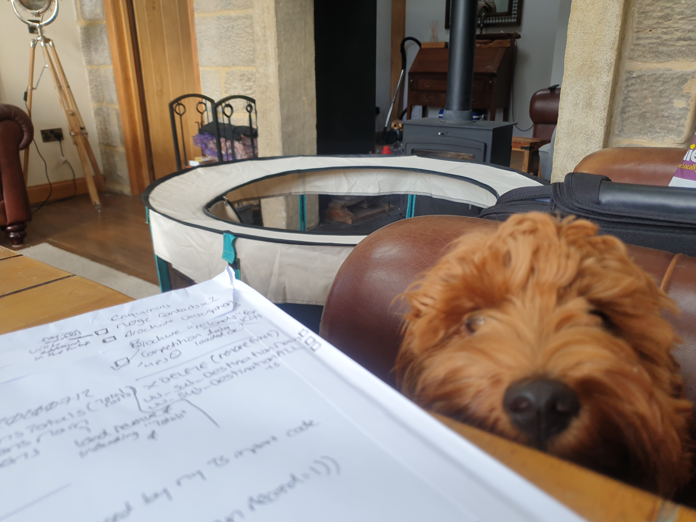
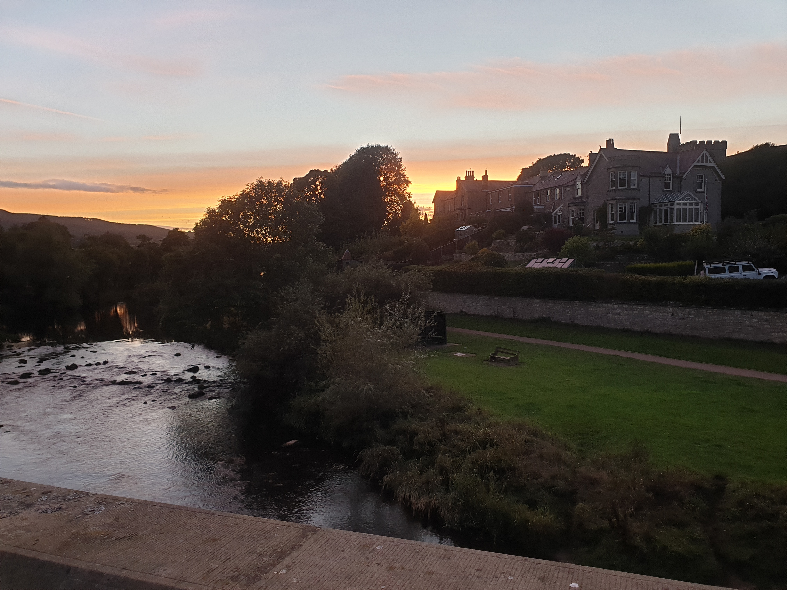
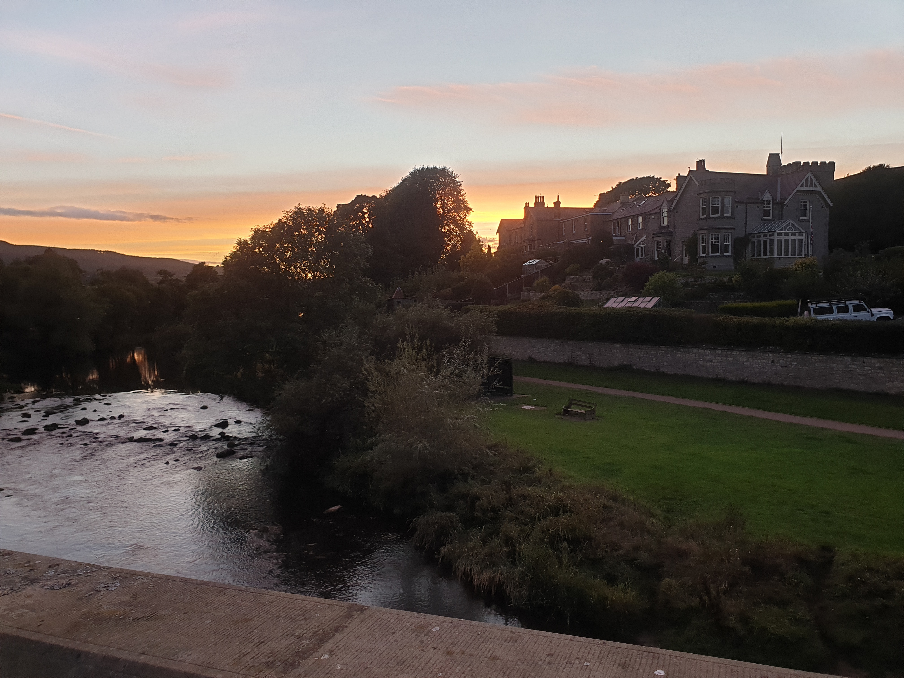
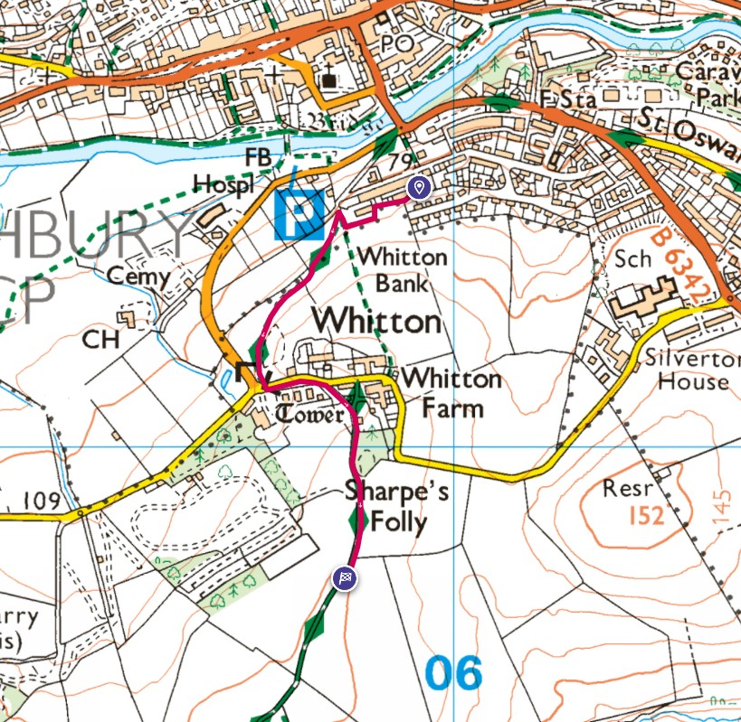

An unexpected week away to Northumberland with Ruby and her assistant/slave Kerry.
Restawhile is a lovely little cottage.


Ruby, the guest of honour.

For me the week away was a working week so I had to do a little bit of computer coding. Luckily I had an assistant to help me with the more tricky database code...

Though my assistant wasn't always happy when I had to leave to get supplies.

A couple of pics taken whilst I was getting supplies.
 

We did get out for a short walk one day, taking in the views across the valley and of a Folly.
